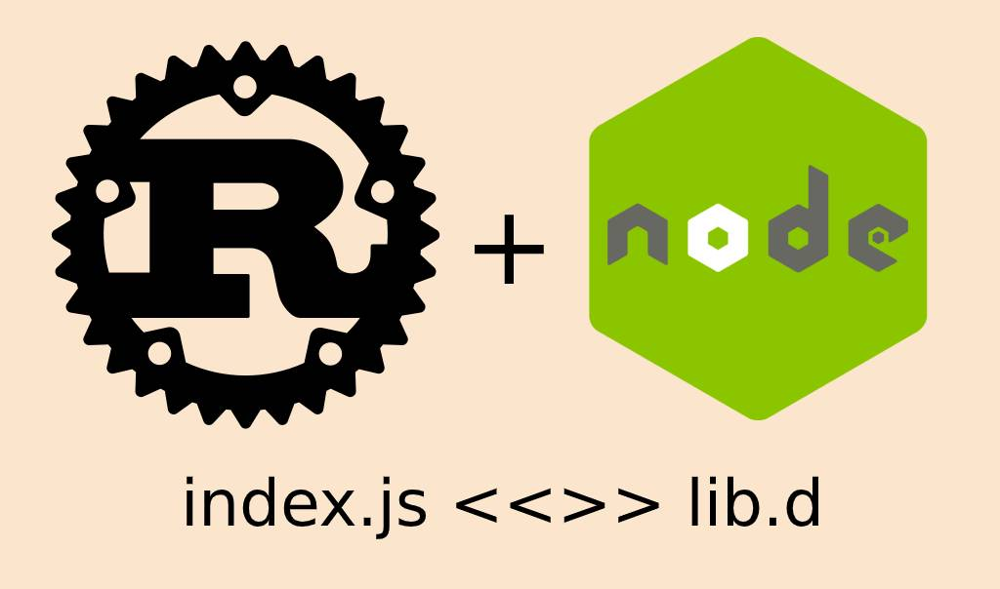

Возьмем гипотетическую задачу: у нас есть рабочий проект на Node.js и мы хотим оптимизировать работу некой функции, производящей сложные вычисления. Принято решение сделать это с помощью Rust - низкоуровневого языка программирования, который справляется с той же задачей гораздо быстрее.Разные подходы могут быть задействованы для решения этой задачи (динамические библиотеки, C++ аддоны Node.js и др).
В данной статье я хочу рассмотреть использование FFI [1] (Foreign Function Interface) и C-совместимой библиотеки написанной на Rust [2]. Этот способ не является самым эффективным по производительности, но тем не менее, может дать неплохой прирост с точки зрения оптимизации.
Приведенный здесь пример, однако, служит лишь для демонстрации того, как можно организовать взаимодействие Node.js и Rust, к самой описанной выше задаче он отношения не имеет.
Часть первая: Обмен строками
Задача: произвести обмен строками между Rust-библиотекой и Node.js, чтобы проиллюстрировать взаимодействие.
Часть вторая: Структуры
Задача: использовать структуры, для обмена данными и результатом между библиотекой и Node.js
В финальном примере я решил объеденить эти две части в одну.
Node.js
В настоящий момент работает только для версии 16.18.1
Напишем сценарий для Node.js, который обращается к динамической библиотеке и вызывает ее функции с передачей параметров и выводом возвращаемых значений.
В качестве зависимостей мы будем использовать:
- ffi-napi - Foreign function interface, расширение для загрузки и вызова динамических библиотек
- ref-napi - дополнительная зависимость, который поможет нам работать с некоторыми C-подобными типами в JavaScript
- ref-struct-napi - предлагает реализацию типа Struct для Node.js
Рассмотрим полный листинг index.js
Несмотря на то, что код достаточно легко читаем, некоторые строки все же требуют пояснений.
*7 Для того, чтобы производить обмен данными с динамической библиотекой, мы должны вооружиться специальными типами, которые эта библиотека будет понимать. Мы не можем использовать JS массив и вместо этого мы будем работать с указателями (Pointer [3]). Для этого нам потребутся модуль (C++ addon) ref (который среди прочего позволяет создавать свои собственные типы), а так же модули реализующие типы структура и массив. В этой строке мы создаем C-подобный тип массива размером в 2 элемента, который будет содержать значения типа int64.
*10 Поскольку функция multiply библиотеки будет возвращать структуру (struct), представление которой в JavaScript отсутствует, нам потребуется модуль ref-struct, позволяющий работать с этим типом данных и, в частности, преобразовать его в объект JavaScript. В этом месте сценария мы создаем структуру OutputType, (подобно Rust или C) с тремя полями типов: int64,OutputArrayType,CString. Последний тип представляет собой так называемую Нуль-терминированную строку (NULL-terminated C-style strings). Такой строкой мы сможем пользоваться в библиотеке.
*24 Для инициализации доступа к функциям библиотеки мы используем вызов ffi.Library, который имеет следующую сигнатуру:
ffi.Library(путь_к_библиотеке, { имя_функции: [ возвращаемый_тип, [ тип_аргумента_1, тип_аргумента_2, ... ], ... ]);
Возвращаемый тип для функции multiply - созданная нами ранее структура OutputType. Аргументом функции является другая структура.
Вы могли заметить, что возвращаемый тип и тип аргумента функции hello есть простая строка string. Это то же самое что и ref.types.CString, никакой проблемы здесь нет, я сделал это нарочно, для демонстрации. Модуль ref позволяет вам использовать “string” и “number”. Для подробностей, смотрите справку к модулю.
*35 Вызываем функцию hello библиотеки, как обычный метод объекта JavaScript.
*41 Создаем структуру с данными. Обратите внимание что свойство result я намеренно опускаю.
*46 Обращаемся к свойству структуры, так же как мы делаем с обычными объектами JS.
*47 Преобразовываем к обычному массиву.
*51 Поскольку мы не можем работать со структурами в Node.js, используя его нативные возможности, мы преобразуем ее в объект. (Заметьте, мы всегда можем обратиться напрямую к полям структуры, используя нотацию доступа к свойствам объектов JavaScript).
Rust
Теперь разберем полный листинг кода библиотеки
Начнем с функции hello.
*1, *3-5 Для работы с С-типами нам потребуются некоторые зависимости.
*7, *56 Аннотация, указывающая компилятору Rust не искажать имя этой функции.
В процессе создания библиотеки Rust, в скомпилированном файле происходит изменение имени функции (техника называемая mangling [4]). Для того, чтобы функцию можно было вызвать из других языков, мы должны отключить такое поведение.
*8 Эта аннотация добавлена мной чтобы линтер clippy не вызывал ошибку о небезопасной функции.
*10 Функция объявляется как публичная - pub (может быть вызвана за пределами этого модуля), а ключевое слово extern обозначет что мы собираемся работать с FFI, то есть вызывать ее из другого языка. “C” говорит о том, какой двоичный интерфейс приложения (ABI) будет использоваться. ABI определяет, как вызывать функцию на уровне сборки. В данном случает это C.
Функция принимает и возвращает значения типа *const c_char
*const Т - тип “указатель” (raw pointer [5]). c_char - эквивалент типа char в языке С [6]
*14 Так как на вход функции мы получаем указатель, а работать мы хотим со строкой, то нам нужно выполнить небезопасный (по ряду причин, например из-за отсутствия гарантии валидности) метод from_ptr, который принимает указатель и возвращает представление заимствованной строки C ( &’a CStr). Эта структура позволяет нам использовать полезные методы. Поскольку функция небезопасная мы оборачиваем ее в блок unsafe *11
*17 Используем метод to_str() чтобы получить срез строки
*22 Возвращаем новую строку как указатель с типом c_char
Теперь рассмотрим функцию multiply и связанные с ней структуры
*25, *43 Аннотация #[repr(C)] перед описанием структуры Output, сообщает компилятору, что данный тип должен быть С-совместимым (с-representation) [7]
*29, *38 Текстовые данные мы возвращаем как тип указатель
Cargo.toml для библиотеки
Чтобы скомпилировать библиотеку нам нужно будет добавить следующие строки к Cargo.toml файлу:
[dependencies]
libc = “*”
[lib]
name = “_node_rust”
path = “src/lib.rs”
crate-type = [“dylib”]
Эти директивы говорят компилятору, что нам нужно получить динамическую библиотеку, здесь мы указываем путь к исходному файлу и название.
Теперь можно скомпилировать библиотеку cargo build –release и запустить node index.js
Как видно из примера мы можем довольно удобно использовать функции динамической библиотеки в Node.js, передавать в нее данные и возвращать результаты. Это может быть использованно для решения задачи, о которой я говорил в самом начале. Так что если вам нравиться JavaScript и Rust, то хорошо иметь ввиду такую возможность.
Но лучший способ понять принцип это его испробовать.
По этой ссылке вы найдте репозиторий описанного примера и инструкцию по установке. Удачи!
Ссылки:
[1]. Foreign Function Interface
[2]. Статья: Rust Inside Other Languages
[3]. Pointers in C programming language
[4]. Name mangling (Wikipedia)
[5]. Type: std/pointer
[6]. Type: std/c_char
[7]. Type layout: c-representation